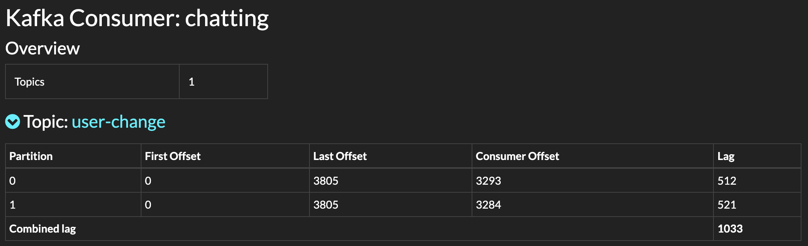
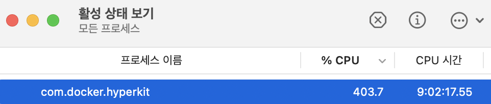
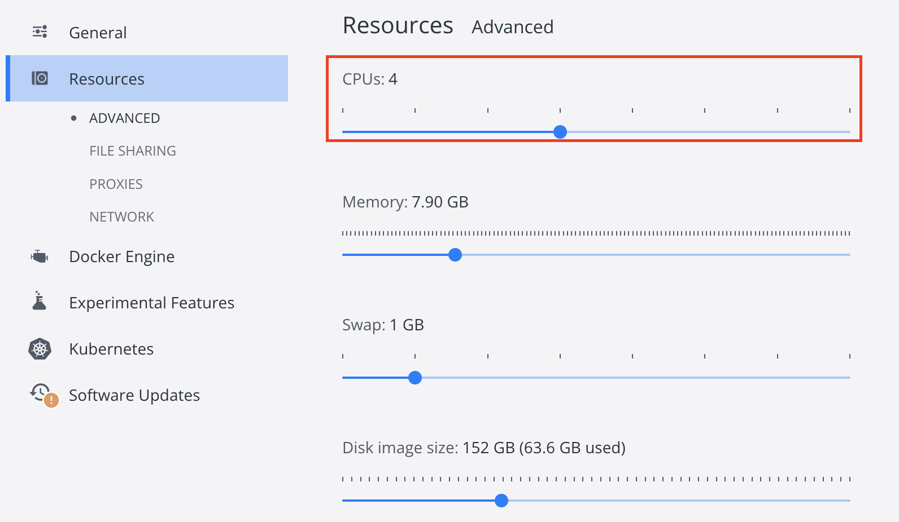

이전 포스팅에서 10000개의 rest api를 직접 test해보았다. 로직에는 문제가 없지만 성능이슈가 너무 나버렸다. 10000개 테스트 하는데 110초가 걸린것이다. 의심가는 부분이 한두군데가 아니다. 오늘의 포스팅은 의심가는 부분을 한번 찾아보고 정리하려한다. 본 과정의 결과로 10K개의 request test 시, 10K개의 response까지 걸리는 시간: 110초 -> 49초로 성능개선 및 이유를 확인할 수 있다.
INDEX(의심가는 부분)
- Golang Code의 http request 속도
- Auth Server -> Kafka -> Chat Server -> Chat DB 과정
- Chat DB(tx log) -> Debezium -> Kafka -> JDBC-Sink-Connector -> Backup DB 과정
- 약 10개의 토픽과 각각의 토픽이 1~25개의 파티션을 보유함에 따라 3대의 Kafka broker끼리 과한 replication 생성
- 도커 리소스 및 nginx 프로세서 제한
5-1. 실험환경
5-2. CPU 사용률 확인
5-3. 개선결과(110초 -> 86초) - 단일 Auth 서버로 인한 병목현상
6-1. auth-server 수평 확장
6-2. nginx loadbalancing
6-3. 개선결과-1(86초 -> 83초)
6-4. 개선결과-2(83초 -> 49초)
1. Golang Code의 http request시 속도
전송속도는 매우 빠르다. 사실 처리할 로직이 별로 필요없기때문에 빠른것은 예상된 결과이다. 문제는 response가 오는 시점이 느리다는 것!
2. Auth Server -> Kafka -> Chat Server -> Chat DB 과정
 위의 캡처에서 보는바와 같이, 지연되는 데이터가 거의 7600개의 메세지 중 1000개 정도 되는것을 확인할 수 있다. 즉, 여기서 어느정도의 지연이 발생하는 것을 확인할 수 있다. 얘는 일단 파티션을 2개만 사용하는데, 파티션을 늘려 분산처리할 수 있도록 설정하는 것이 좋을것 같다!
하지만 이 부분은 Auth Server 테스트에 크게 영향이 없다. 오히려 Chat Server의 성능테스트에 영향을 준다.
3. Chat DB(tx log) -> Debezium -> Kafka -> JDBC-Sink-Connector -> Backup DB 과정
이 부분은 마찬가지로 Chat Server 테스트시 고려해야할 부분이다.
4. 약 10개의 토픽과 각각의 토픽이 1~25개의 파티션을 보유함에 따라 3대의 Kafka broker끼리 과한 replication 생성
이 부분은 마찬가지로 (1)Chat Server 테스트 + (2)전체 서비스 리소스 소모량 관찰 시 고려해야할 부분이다. 아무래도 3번의 의심부분처럼 직접 캡처하면서 확인하기는 힘들것 같다(토픽이 여러개라서ㅜㅜ). 그래서 Kafka의 lag 데이터를 따로 통계내는 Grafana를 사용하여 한눈에 봐야겠다. 
5. 도커 리소스 및 nginx 프로세서 제한
5-1. 실험환경
| MacBook Pro (13-inch, 2020, Four Thunderbolt 3 ports) |
|---|
| Processor : 2 GHz 쿼드 코어 Intel Core i5 |
| Memory : 32GB 3733 MHz LPDDR4X |
5-2. CPU 사용률 확인
 필자의 맥북이 논리 cpu 코어가 8개 물리 코어가 4개인 것을 감안한다면 약 50%의 자원을 사용하고 있는 것을 확인할 수 있다.
1
2
3
4
5
6
7
gyuminhwangbo@Gyuminui-MacBookPro spring-chatting-server % sysctl -a | grep cpu
...
hw.activecpu: 8
hw.perflevel0.physicalcpu: 4
hw.perflevel0.physicalcpu_max: 4
hw.perflevel0.logicalcpu: 8
...
그리고 현재 도커는 4개의 CPU 논리코어만 활용가능하도록 아래와 같이 설정되어있다. 
즉, Docker에 할당가능한 모든 리소스를 풀로 다 쓰고있다고 볼 수 있다!! 따라서 대량 http request 테스트의 지연 문제점은 Docker 할당 리소스 부족 이라는 1차 결론을 내릴것이다.
5-3. 개선결과
(1)cpu 용량을 더 늘림과 동시에 (2)nginx의 work 프로세스 제한걸린 부분을 확장하였더니 아래의 결과를 확인하였다.
1
2
3
4
5
6
7
# nginx.conf 프로세서 확장
worker_processes 100;
# shell 확인
gyuminhwangbo@Gyuminui-MacBookPro testing % go run main.go http://127.0.0.1:8080/auth/user 10000
실행시간 86.281953431
status: 200 count: 10000
비교했을 떄, 110초 -> 86초 로 약 24초가량 단축됨을 관찰할 수 있다!
6. 단일 Auth 서버로 인한 병목현상
Auth 서버가 하나이기때문에 서버 로직의 병목현상이 존재할 수 있다. 따라서 Auth 서버를 확장(DB는 단일)시킬것이다.
우리는 쉽게 이를 확장시킬 수 있다! Kafka의 확장성 장점이 여기서 드러나고, Docker의 이미지 재활용 장점또한 여기서 드러난다!
우리가 수정해야 할 곳은 nginx.conf와 docker-compose.yaml 이 두 가지이다.
6-1. 먼저 docker-compose.yaml에 auth-server-2를 아래와 같이 추가
1
2
3
4
5
6
7
8
9
10
11
12
13
14
15
16
17
18
19
20
21
22
23
24
25
26
27
28
29
version : '2'
services:
# -------- KAFKA --------
...
# -------- Chatting Server --------
...
# -------- kafdrop for visualization --------
...
# -------- postgres -> kafka source connector --------
...
# -------- API GATEWAY --------
...
# -------- Authentication Server --------
...
auth-server-2:
container_name: auth-server-2
build: ./spring-auth-backend-server
ports:
- "8072:8072"
environment:
- SERVER_PORT=8072
- SPRING_DATASOURCE_URL=jdbc:postgresql://auth-db:5435/auth
- SPRING_DATASOURCE_USERNAME=postgres
- SPRING_DATASOURCE_PASSWORD=password
- SPRING_JPA_HIBERNATE_DDL_AUTO=update
- KAFKA_BOOTSTRAP=kafka1:9092,kafka2:9092,kafka3:9092 # 내부포트
depends_on:
- auth-db
restart: always
6-2. 이후, nginx.conf의 upstream에 해당 컨테이너를 추가
1
2
3
4
upstream auth-server {
server auth-server:8085;
server auth-server-2:8072;
}
위와 같이 아무것도 설정하지 않으면, nginx가 라운드 로빈으로 번갈아가면서 메세지를 날려준다.
6-3. 개선결과-1
1
2
3
gyuminhwangbo@Gyuminui-MacBookPro testing % go run main.go http://127.0.0.1:8080/auth/user 10000
실행시간 83.900060333
status: 200 count: 10000
86초 -> 83초로 아주 조금 감소한 것을 확인할 수 있다.
참고로 cpu사용률은 평균 520%로 440%에서 약 80%가량 상승했다.
6-4. 개선결과-2
그런데 이상한 점을 발견했다. 혹시 몰라서 바로 한번더 테스트해보았더니,
1
2
3
4
5
6
gyuminhwangbo@Gyuminui-MacBookPro testing % go run main.go http://127.0.0.1:8080/auth/user 10000
실행시간 83.900060333
status: 200 count: 10000
gyuminhwangbo@Gyuminui-MacBookPro testing % go run main.go http://127.0.0.1:8080/auth/user 10000
실행시간 49.853405095
status: 200 count: 10000 <--- 약 34초 소모시간 감소?!
이게 무슨일일까?
- 일단 TCP handshake에 소모되는 시간 감소는 아닐것이다.
Golang 코드에서 Timeout 발생하면 연결을 유지하지 않기때문에, 다시 handshake를 해줘야하기 떄문이다.
- 혹시 nginx가 이전 connection에 대한 정보를 캐시로 가지고 있기때문에 초기 연결이 빠르게 설정된게 아닐까?
이또한 아닐 것이다. nginx는 default로 GET 메소드에 대해서만 캐시 구성을 설정해주기 때문이다. 우리는 POST 메소드를 전송한다.
증명하기 위해 nginx container을 초기화시키고 재실행 해보았다. 역시 49초 언저리로 나왔다.
그렇다면 원인은 nginx는 아니고, test code 아니고, auth-server에 있다.
- Spring Server warming-up process
스프링서버는 대부분이 LAZY로 되어있어서 초기 데이터들로 워밍업되기 전까지는 아직 완벽히 initialize되지 않는다. 따라서, 스프링 서버가 워밍업(JPA, driver, etc.)되기 시간이 초기 테스트에 포함되기때문에 시간이 더 소요된다고 볼 수 있다.
reference : https://stackoverflow.com/questions/63019528/why-are-spring-rest-services-slow-on-the-first-request